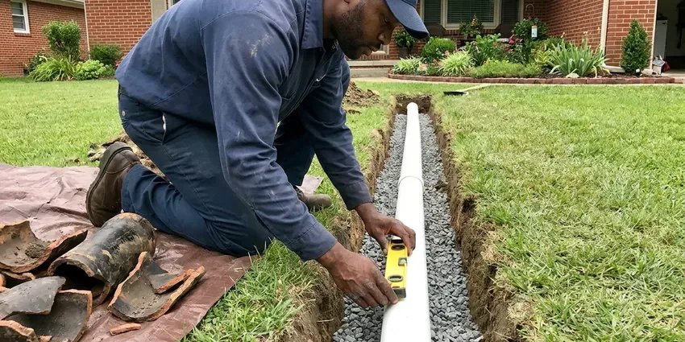

Emergency Plumbing Repair in Fargo, ND
Water spraying, sewage backing up or a gas smell near the water heater? Our emergency plumbers respond day and night in Fargo, ND.
- Licensed & Insured
- Fully Stocked Service Trucks
- Upfront Pricing Before Work
- Upfront Pricing
Need Emergency Plumbing Repair in Fargo, ND?
For urgent plumbing issues, HPN Plumbing is your trusted local expert. Call us today for peace of mind.
Expert Emergency Plumbing Repair in Fargo, ND
HPN Plumbing knows that plumbing emergencies don't wait for business hours. Whether it's a burst pipe during a hard freeze or a severe sewer backup, our team brings the right tools and expertise to provide immediate, effective emergency plumbing repair. We minimize damage and restore your peace of mind quickly.
Our expertise includes:
- Leaking water heater shutoff, drain-down and replacement
- Fast Water Heater Leak Fixes
- Emergency Drain & Sewer Clearing

Additional Plumbing Repair Services in Fargo, ND
We offer expert plumbing repair services across Fargo, ND to fix leaks, restore flow, and keep your system running smoothly.


Customers
Why Choose HPN Plumbing for Emergency Plumbing Repair in Fargo, ND?
When your plumbing fails unexpectedly, you need a team you can trust to respond right away and effectively. HPN Plumbing is committed to providing prompt, reliable emergency plumbing repair.
- Phone Guidance, We help you find and close the main shutoff or water heater valve immediately.
- No Surprise Bills, You approve a written price before any emergency repair begins.
- Lasting Solutions, We don't just patch problems. We aim to provide durable repairs using quality parts and proven techniques, preventing future emergencies.
Citywide Coverage
Whether you are in a single-family home, apartment, condo or business in Fargo, we respond to plumbing emergencies fast. Weekends and holidays are no exception.
Experienced Team
The HPN Plumbing team is made up of seasoned professionals who have tackled countless emergency plumbing scenarios across North Dakota. Their expertise means that whether it's a complex slab leak or a burst pipe, your repair is handled with precision and skill.
Safety-First Approach
Even in an emergency, we follow plumbing code and use approved materials. If a repair needs a permit, we make the area safe first and complete permitted work correctly.
Trusted Certified Fargo Plumbing Services Professionals
At HPN Plumbing, we take pride in providing licensed, certified plumbing services throughout Fargo, ND. Backed by recognized industry credentials, our experienced plumbers combine technical skill with genuine customer care. Whether it is repair, installation, or maintenance, we follow strict safety and quality standards to deliver lasting results you can trust.
Call Us Now PHCC Plumbing Contractor Recognition
PHCC Plumbing Contractor Recognition Better Business Bureau (BBB) Accreditation
Better Business Bureau (BBB) Accreditation Angi Certified Pro
Angi Certified Pro ISO 9001 Quality Management Certification
ISO 9001 Quality Management CertificationReliable Emergency Plumbing Repair Services in Fargo, ND
Commercial Emergency Plumbing in Fargo
Businesses in Fargo rely on working plumbing, and an emergency can halt operations and impact profitability. HPN Plumbing offers rapid emergency plumbing repair for commercial properties, addressing issues like large-scale drain blockages, commercial water heater failures, or industrial pipe bursts. We know the demands of commercial systems and work efficiently to limit downtime and get your business back on track.

Burst Pipe Repair in Fargo
Frost goes deep into the ground here, so water and sewer lines must be buried well below the surface to avoid freeze damage. Our emergency service quickly locates the rupture, isolates the water supply, and performs durable repairs using PEX, copper, or PVC piping, depending on your existing system and the nature of the break. We work to limit water damage and restore your water flow quickly, preventing further structural issues in your Fargo home.
Emergency Repair vs Scheduled Repair Cost in Fargo, ND
Emergency service after hours can cost more than a scheduled visit because a plumber is dispatched immediately. In many cases, we can stop the damage during the emergency visit and schedule the full repair during normal hours to save you money. We explain both options so you can decide. Our goal is to protect your home without needless charges.
Sewer Backup Emergency Repair in Fargo, ND
When sewage backs up into tubs, showers or floor drains, you have a health hazard and a serious mess. We clear the main line with an auger or hydro-jetter and run a camera to find the cause. Roots, grease, wipes and broken pipes are the most common culprits. We explain repair options if the line is damaged.
Major Leak Detection & Repair in Fargo
Beyond obvious burst pipes, large hidden leaks can cause extensive structural damage and high water bills. Our emergency plumbers in Fargo use modern leak detection technology, such as acoustic sensors and thermal imaging, to pinpoint the source of major leaks, including those behind walls or under slabs. Once located, we perform targeted repairs to prevent further damage and restore your plumbing.
Gas Leak Emergency Service in Fargo
A gas leak is a serious and potentially dangerous emergency that requires immediate professional attention. If you smell gas, evacuate and call us right away. Our certified plumbers in Fargo use specialized equipment to detect the exact location of the leak, perform the necessary repairs or replacements of gas lines and fittings, and make sure your system is safe and up to code before restoring service.
Toilet Overflow & Repair in Fargo, ND
An overflowing toilet is a messy and urgent plumbing emergency that can lead to serious water damage if not addressed immediately. Our team promptly diagnoses the cause, whether it's a clogged drain, a faulty fill valve, or a malfunctioning flapper. We perform needed repairs or replacements so your toilet works correctly and does not overflow again, restoring hygiene and function to your Fargo, ND home.

Commercial Emergency Plumbing Repair in Fargo
Restaurants, offices, retail stores and apartment buildings cannot afford downtime from a plumbing failure. We respond to commercial emergencies quickly and work to restore service with minimal disruption. That includes restroom backups, grease line clogs and failed water heaters. We coordinate with property managers and owners.
Emergency Plumbing Repair Near Me in Fargo, ND
When you search for emergency plumbing repair near me, you need someone who answers and shows up fast. Our local plumbers are ready day and night to respond to urgent plumbing problems. We arrive with the tools and parts to fix most issues in one visit.
Being local means shorter drive times and familiarity with homes, pipe materials and water conditions in this area. That helps us solve emergencies faster. Give us a call the moment something goes wrong.
HPN Plumbing at a Glance
- Fully licensed plumbing team covering Fargo, ND
- Same-day appointments and 24/7 emergency response
- Clear written estimates, no hidden fees
- 4.9-star rated by 408+ North Dakota customers
Fargo Map
Fargo Information
- Population
- 133,188
- Area codes
- 701/402/218
- Service area
- Fargo and communities within 40 miles
- Nearby
- West Fargo, Horace, Wahpeton, Valley City
Big swings between summer heat and winter cold make pipes expand and contract, which slowly loosens fittings over the years. That is why prompt emergency plumbing repair matters for protecting Fargo homes from burst pipes, failed water heaters and backups.
Expert Services
Trust our professionals for reliable HPN Plumbing solutions in Fargo, ND.
Our Specialized Plumbing Services in Fargo, ND
At HPN Plumbing, we provide a complete range of plumbing services across Fargo, ND. From leak detection to full system installations, our team ensures fast, precise, and affordable service for both residential and commercial properties. Explore our core services below:


How Our Emergency Plumbing Repair Process Works in Fargo, ND
HPN Plumbing follows a simple, efficient procedure to handle your emergency plumbing repair from start to finish.
Request a Quote
Call (701) 403-1348 and tell us what is happening, and we will help you shut off water or gas right away. We dispatch a plumber right away.
Stabilize the Situation
On arrival, we stop the leak or backup and assess the damage. We give you a clear price for the repair before starting.
Repair and Restore
We make the repair, test the system and restore service. We clean up and explain how to prevent a repeat emergency.
Frequently Asked Questions About Emergency Plumbing Repair in Fargo
Emergency service calls usually range from $150 to $350 for after-hours dispatch, plus the cost of the repair. Common emergency repairs such as burst pipe fixes or main line clearing usually run $250 to $1,200. We give you a price before starting work.
Yes. We often carry common tank sizes from brands like Bradford White, Rheem and A.O. Smith for same-day replacement. If a special size is needed, we can usually install it within a day.
Yes, our technicians are trained and experienced in repairing plumbing systems and fixtures from all major brands. This includes water heaters from Rheem, Bradford White, A.O. Smith, and Navien, as well as fixtures from Moen, Delta, Kohler, and American Standard. We carry common parts for fast emergency repairs.
HPN Plumbing is equipped to service and repair all major plumbing brands found in North Dakota homes and businesses. This includes water heaters from Rheem, Bradford White, A.O. Smith, and Navien, as well as fixtures from Moen, Delta, Kohler, and many others. Our technicians carry a wide range of everyday parts.
If you suspect a gas leak, immediately evacuate everyone from the property, including pets. Do not use light switches, phones, or anything that could create a spark. Once safely outside, call 911 and then HPN Plumbing at (701) 403-1348. We will send a licensed plumber for emergency gas leak detection and repair.
Key signs include sudden loss of water pressure, water stains on ceilings or walls, gurgling drains, foul odors from drains, water pooling where it shouldn't be, or the sound of running water when no fixtures are in use. Any of these could point to a serious underlying issue that needs immediate attention in your Fargo home.
Many homeowner's insurance policies cover sudden and accidental water damage from plumbing emergencies, but coverage can vary. We suggest reviewing your policy or contacting your insurance provider directly. We can provide detailed invoices and documentation for your claim.
For most minor emergency plumbing repairs, a permit may not be immediately required. However, for significant work like replacing a main sewer line, extensive re-piping, or installing a new water heater, permits from the local building department are typically necessary. HPN Plumbing handles all required permits to stay code compliant.
What People Are Saying About Our Plumbing Experts?

Mark T.
When our office needed drain cleaning, HPN Plumbing provided quick, reliable service. The plumber arrived on time and made sure every drain flowed perfectly before leaving. Very satisfied.
Drain Cleaning · Wahpeton, ND
James P.
Our commercial plumbing system had a leak under the sink, and HPN Plumbing handled it professionally. The plumbers arrived quickly and restored everything without disruption to our customers.
Commercial Plumbing · Fargo, ND
Sofia M.
Two new toilets installed in one visit, no mess left behind, and the tech even adjusted a faucet he noticed was dripping. Fair pricing and really friendly.
Toilet Installation · Jamestown, NDRobert G.
The trenchless sewer replacement saved our front yard. They walked us through the camera inspection footage first so we knew exactly what we were paying for.
Sewer Line Replacement · Jamestown, NDLaura S.
I scheduled a water heater replacement, and the team made the process smooth and affordable. The new unit works perfectly, and they cleaned up after completing the job.
Water Heater Replacement · West Fargo, ND
Patricia H.
We had a slab leak that two other companies could not find. HPN Plumbing located it in under an hour, explained our options, and the price matched the quote to the dollar.
Slab Leak Repair · West Fargo, ND